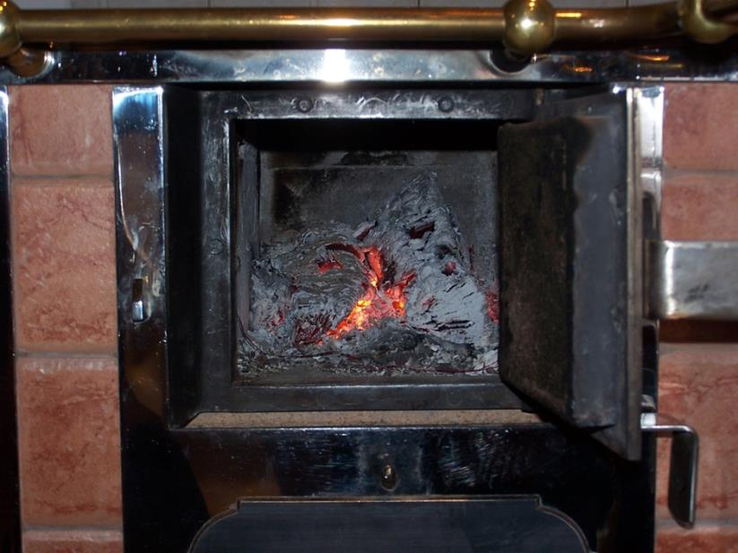
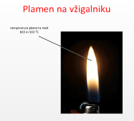
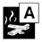
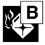
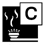
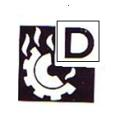
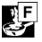
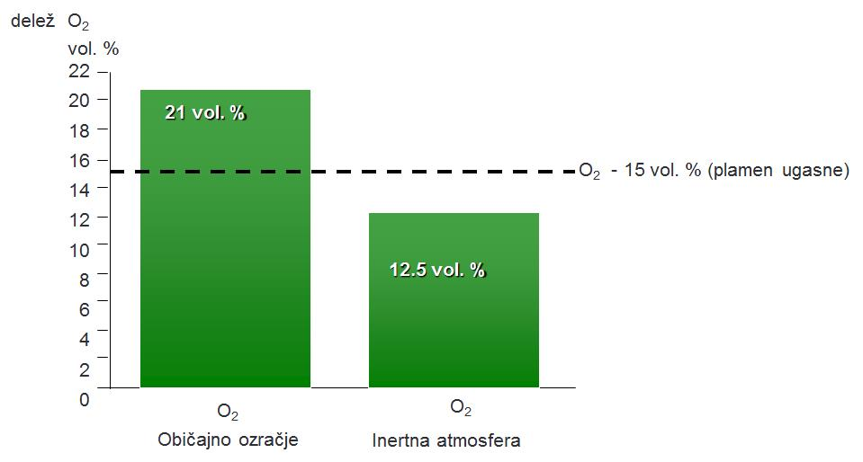
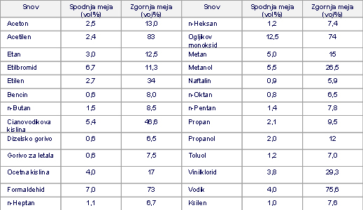

GORENJE
Gorenje lahko po navadi zelo enostavno opazujemo okoli sebe, saj vidimo goreti svečko, les in plin v peči ipd. Za gorenje potrebujemo tri osnovne komponente: gorivo, kisik in vir vžiga. Goriva so v trdni, tekoči in plinasti obliki. Kisik za gorenje prihaja iz zraka, kjer je kisika približno 21 volumskih odstotkov. Virov vžiga za gorenje je lahko več. Med najbolj pogoste spadajo vsakdanja sredstva, kot so vžigalice in vžigalniki. Vir gorenja sta lahko tudi trenje, kemijska reakcija ipd. Gorenje je kemijska reakcija med gorljivo snovjo (gorivom) in oksidacijskim sredstvom (kisikom iz zraka), pri čemer se sproščajo toplota, svetloba, neizgoreli in izgoreli produkti ter toksični plini. Pogoje za gorenje lahko najbolj nazorno ponazorimo s sklenjenim požarnim trikotnikom, ki je sestavljen iz gorljive snovi (gorivo), zadostnega vira vžiga (toplota) in oksidacijskega sredstva (na primer kisik iz zraka).

Slika 1: Požarni trikotnik
V stanovanju je okoli nas veliko gorljivih snovi. Pohištvo, zavese in naprave zabavne elektronike so vse trdna goriva. V bivalnem okolju je tudi dovolj kisika, ki ga za ohranjanje življenja uporablja tudi človek. Kljub dvema pogojema za gorenje k sreči požarov v stanovanjih ni prav veliko. Za sklenitev požarnega trikotnika potrebujemo še vir vžiga in to je izredno pomembna preventiva. Gorenje je lahko želeno, kot denimo kurjenje na štedilniku ali ob peki na žaru. Takemu gorenje označujemo kot ogenj.

Slika 2: Kurjenje v kurišču štedilnika – nadzorovan ogenj
V primeru, ko ogenj preide meje kurišča oziroma ni več nadzorovan, pa lahko govorimo o požaru. V Sloveniji je letno preko 2000 požarov na objektih. Zardi požarov v Sloveniji letno umre od deset do dvajset ljudi. Za gorenje mora biti gorljiv material segret na vžigno temperaturo. Les se vžge pri približno 250 oC, podobno velja za papir. Plamen plinske mešanice (propan butan ali zgolj butan) v vžigalniku zgoreva pri temperaturi med 800 in 900 oC.

Slika 3: Plamen, ki nastaja med gorenjem plina v vžigalniku
Goreti lahko začne zaradi samodejnega vžiga gorljivega materiala (samovžig – pojav je razložen v nadaljevanju) ali zaradi zunanjega vira vžiga. Pri gorenju se sprošča toplota. Toplota, ki jo sprošča vir vžiga (vžigalica, vžigalnik, kemijske reakcije, trenje ipd.), lahko vžge goriva v bližini. Tako se iz vžiga začetnih goriv gorenje prenese na sosednja goriva – požar se razvija naprej. Slika 4 prikazuje s termografsko kamero izmerjeno temperaturo na neloščeni površini vrat štedilnika na trda goriva – v štedilniku gorijo drva.

Slika 4: Temperatura na vratih štedilnika na trda goriva
Požar skoraj vedno pomeni nevarnost za ljudi, povzroči pa tudi veliko materialno škodo. Neposredno škodo predstavljajo zgorele materialne dobrine ter poškodbe na zgradbah, strojih in napravah. Nastaja pa še dodatna, posredna škoda, ki je posebno v gospodarstvu lahko veliko večja od neposredne (po zavarovalniških podatkih pet- do desetkrat večja). Ta škoda nastaja predvsem zaradi neizpolnjevanja pogodbenih obveznosti podjetja, izpada dohodka, izgube položaja na tržišču in izgube delovnih mest. Požari ali njihovo gašenje povzročajo tudi ekološke katastrofe in škodo v naravi, ki jo je težko oceniti (gozdni požari). Da okoli nas ne zagori, moramo upoštevati preventivne ukrepe. Ti so podani v poglavju o požarni preventivi. Rečeno je že bilo, da se gorljive snovi v procesu gorenja lahko pojavljajo v trdni, tekoči in/ali plinasti obliki. Ločimo trdna (A), tekoča (B) in plinasta (C) goriva. V posebno skupino goriv spadajo tudi lahke kovine (D) ter jedilna olja in maščobe (F).
Tabela 1: Razredi gorljivih snovi
| Vrsta goriva | Oznaka |
| A – gorljive trdne snovi |  |
| B – vnetljive tekočine |  |
| C – gorljivi plini |  |
| D – lahke kovine |  |
| F – jedilna olja in maščobe |  |
Vse gorljive snovi ne gorijo enako.
Gorenje trdnih snovi
Mehanizem gorenja ni enak za vse trdne snovi. Potek gorenja in spremembe snovi, ki spremljajo gorenje, so odvisni od sestave trdnih snovi in njihovih lastnosti. Trdne snovi lahko gorijo:
- neposredno, tako da pri segrevanju ne razpadajo, temveč takoj oksidirajo (npr. ogljik, magnezij, aluminij itd.)
- s spremembo agregatnega stanja, ko snovi prehajajo iz trdnega v tekoče in nato v plinasto stanje (parafin, mast, sintetične smole itd.)
- s pirolizo, kar je termični razpad, pri katerem iz snovi izhajajo pirolizni gorljivi plini. Gorenje večine gorljivih trdnih snovi poteka po procesu pirolize. Večina trdnih organskih materialov, kot so les in izdelki na osnovi lesa, premog in nekatere vrste sintetičnih materialov (duroplasti), ne gori, ampak pirolizira. Gorijo gorljivi produkti pirolize (na primer metan, vodik, ogljikov oksid ipd.)
Gorenje vnetljivih tekočin in plinov je hitrejše od gorenja gorljivih trdnih snovi.
Gorenje vnetljivih tekočin poteka v dveh fazah: uparjanje in gorenje hlapov v plinski fazi s plamenom. Ob segrevanju vnetljive tekočine oddajajo hlape, ki so gorljivi ter ob prisotnosti kisika in vira vžiga hitro zgorevajo. Mešanica hlapov in zraka gori, če je ta v mejah vnetljivosti (med spodnjo in zgornjo mejo). Podatke o mejah vnetljivosti lahko najdemo na varnostnih listih.
Gorenje vnetljivih plinov je po svoji obliki in načinu zgorevanja podobno gorenju hlapov vnetljivih tekočin.
Gorenje vnetljivih tekočin in plinov je izredno hitro. Navadno lahko govorimo o tako imenovanem vzbuhu.
Kot oksidacijsko sredstvo pri gorenju v večini primerov nastopa kisik iz zraka. En volumski delež zraka vsebuje poprečno eno petino (21 volumskih odstotkov) kisika in štiri petine (79 volumskih odstotkov) dušika. Pri določenih razmerah (segrevanje) lahko oddajajo kisik tudi posamezni materiali, ki so znani pod imenom oksidanti, na primer kalijev permanganat, vodikov peroksid idr. Nekatere snovi imajo kisik že v sebi, tako da za gorenje ni potreben zunanji kisik. Zato oksidacija (gorenje) teh snovi poteka tudi v atmosferi z manj kisika. Aluminij (Al) in magnezij (Mg) v prahu se lahko vžgeta ob stiku z vodo. Pri reakciji oziroma oksidaciji Al ali Mg z vodo zaradi visoke temperature nastane vodik, sprošča pa se toplota. Pojav, kjer voda razpade na vodik in kisik zaradi dovedene toplote, imenujemo termična disociacija.

Slika 5: Koncentracije kisika v zraku
Gorenje je odvisno od ravni kisika v zraku. Ko raven kisika v okolici gorenja pade na 15 do 17 volumskih odstotkov kisika, preneha zgorevanje s plamenom. To je za razvoj požara pomembna faza, saj pojav plamena z oddajanjem toplote najbolj prispeva k napredovanju požara. Po prenehanju zgorevanja s plamenom se ob koncentracijah kisika pod 15 volumskimi odstotki nadaljuje proces tlenja. Ta preneha, ko raven kisika pade pod tri volumske odstotke. V prostoru lahko z uvajanjem inertnih plinov (najpogosteje dušik) preventivno ves čas ustvarjamo atmosfero, kjer je raven kisika med 15 in 17 volumskimi odstotki. Takšno atmosfero imenujemo inertna atmosfera, kjer zgorevanje s plamenom ni mogoče. Z inertno atmosfero so lahko opremljene lakirnice, skladišča, deli proizvodnega procesa ipd.
Toplota ali energija za vžig je potrebna za zagotovitev poteka reakcij oksidacije, in sicer za segrevanje do vžigne temperature, ter pri trdnih in tekočih snoveh za nastanek hlapov (izparevanje) in nastanek plinskih razkrojnih produktov (piroliza). Gorenje se bo nadaljevalo, dokler:
a. ne pogori ves gorljivi material ali ne odstranimo gorljivega materiala
b. koncentracija kisika ne pade pod koncentracijo, ki je še potrebna za vzdrževanje gorenja (oksidacijsko sredstvo se porabi ali pa ga izpodrinemo z gasilom)
c. ne ohladimo gorljivega materiala pod vžigno temperaturo (denimo gašenje z vodo ali peno)
d. ne inhibiramo plamenov s kemijskimi sredstvi (gašenje z gasilnikom na ABC-prašek)
Na podoben način delujejo tudi gasila oziroma gasilna sredstva, saj z gašenjem vplivamo na eno od komponent požarnega trikotnika, na primer odvzamemo (prekrijemo) gorivo, onemogočimo dostop kisika do goriva ali ohladimo gorivo. Pri gorenju nekaterih goriv so pomembne dodatne razmere, da lahko začne goreti. Za gorenje vnetljivih tekočin so pomembne naslednje lastnosti tekočin:
- temperatura plamenišča
- temperatura vžiga
- energija vžiga
- temperatura samovžiga
- spodnja meja vnetljivosti in
- zgornja meja vnetljivosti
Temperatura plamenišča
Če segrevamo tekočino, začnejo izhajati hlapi tekočine. Če je temperatura tekočine ista ali malo višja od temperature plamenišča, se nad tekočino nabere dovolj hlapov vnetljive tekočine, da se v prisotnosti manjšega zunanjega vira vžgejo s kisikom iz okoliškega zraka. Takrat poteka gorenje s plamenom v plinski fazi. Pri tej temperaturi nastaja premalo hlapov, da bi bilo omogočeno neprekinjeno gorenje. Hlapi hitro pogorijo in plamen ugasne.
Temperatura plamenišča za bencin je približno –20 oC, medtem ko znaša temperatura plamenišča za kurilno olje najmanj 55 oC. To pomeni, da je mogoče hlape bencina z majhnim virom vžiga (na primer vžigalica) vžgati pri sobni temperaturi, hlape kurilnega olja pa ne.
Za neprekinjeno gorenje je treba tekočino segreti na nekoliko višjo temperaturo, imenovano temperatura vžiga (tudi temperatura vnetišča). Pri tej temperaturi izhlapi toliko hlapov, da se v primeru vžiga z zunanjim virom tudi po odstranitvi vira vžiga nadaljuje neprekinjeno gorenje hlapov nad površino tekočine. Pri gorenju pri tej temperaturi se sprošča dovolj toplote, ki je potrebna za vzdrževanje ustrezne temperature (običajno temperature vrelišča) na površini tekočine, za izparevanje in za segrevanje glavne mase tekočine.
Zmes plinastega goriva in kisika, zraka ali drugega oksidanta ne gori pri katerikoli koncentraciji. Gorenje lahko poteka le, če je koncentracija znotraj določenih meja, ki jih poznamo kot spodnjo in zgornjo mejo vnetljivosti. Meje vnetljivosti so po navadi navedene v volumskih odstotkih (včasih tudi v g/m3) pri 25 0C in atmosferskem tlaku. Koncentracije med obema mejama vnetljivosti imenujemo območje vnetljivosti, ki je značilen podatek za vsako plinasto gorivo. Meje vnetljivosti za nekatere snovi so podane v tabeli 2.
Tabela 2: Meje vnetljivosti za nekatere snovi

Isti meji vnetljivosti imenujemo včasih tudi spodnja in zgornja meja eksplozivnosti, ker znotraj teh meja ob posebnih razmerah zgorevanje poteka tudi eksplozivno. Kadar se gorljiva snov od začetne temperature, ki je nižja od temperature vžiga te snovi, segreva sama in se vname, je to samovžig, opredelimo pa ga s temperaturo samovžiga. Pojav samovžiga je odvisen od vrste snovi in okoliščin. Pri nekaterih snoveh je za samovžig potrebna začetna temperatura, že normalna temperatura okolice.
Podatki o temperaturi plamenišča, vnetišča, samovžiga ter spodnji in zgornji meji so podani v varnostnih listih, ki morajo biti del obvezne opreme delovnih mest, kjer poteka delo z nevarnimi snovmi in vnetljivimi tekočinami.
Embalaža, kjer se skladiščijo nevarne snovi in vnetljive tekočine, mora biti opremljena z varnostnimi listi.